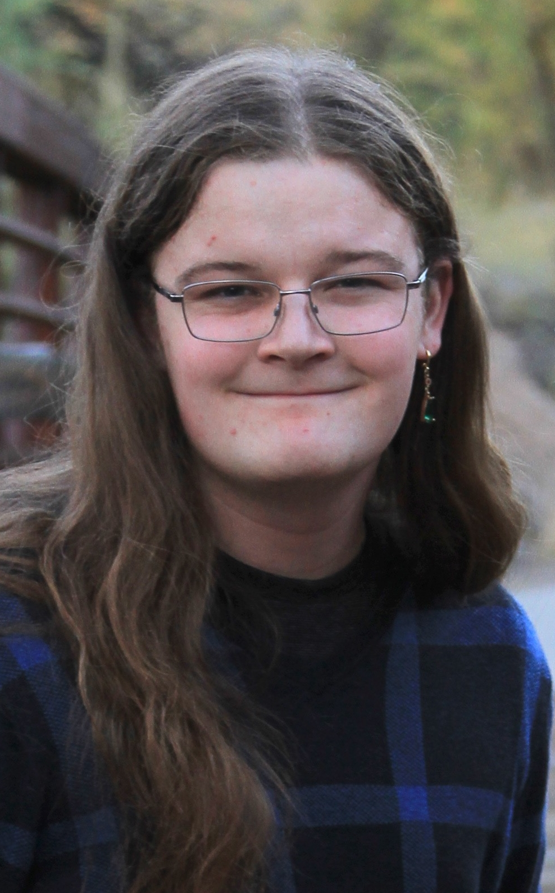

TLDR: Computability, complexity, languages, automata
Currently interested in formal language systems, particularly properties of n-ary finite-state functions and transduction systems. Another focus is language theory and computability problems therein, including static vulnerability analysis, optimization, static analysis, higher-order macros, etc. Previously worked in static source code vulnerability analysis (e.g. the flow of secret information beyond its scope) via taint traversals and code property graphs.
Received a Bachelor's in Computer Science from Colorado Mesa University, with dual undergraduate research in static source code analysis and molecular dynamics. Currently a graduate student of computer science at the University of Colorado Boulder. Plans to pursue a PhD in theoretical computer science and a career in research.
Besides research, also experienced in data analysis, software engineering, and high-performance computing.